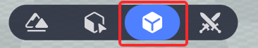
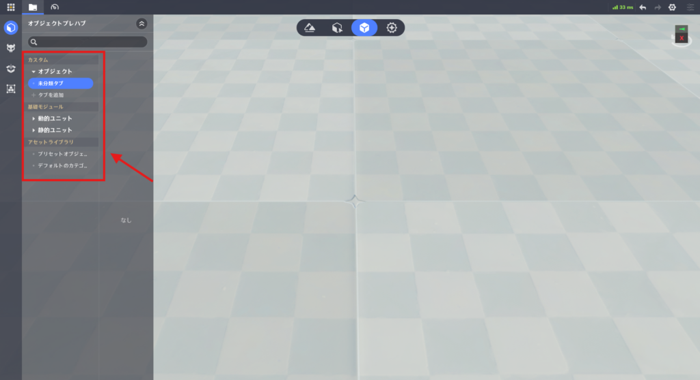
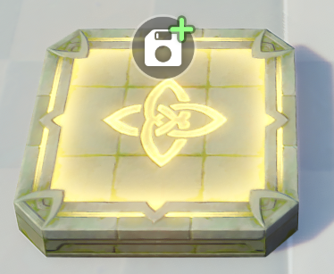
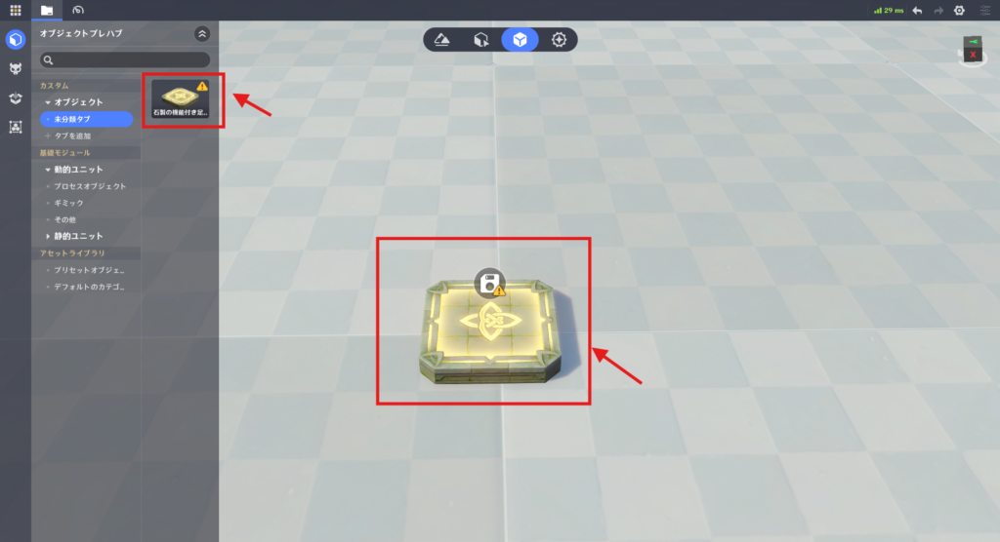
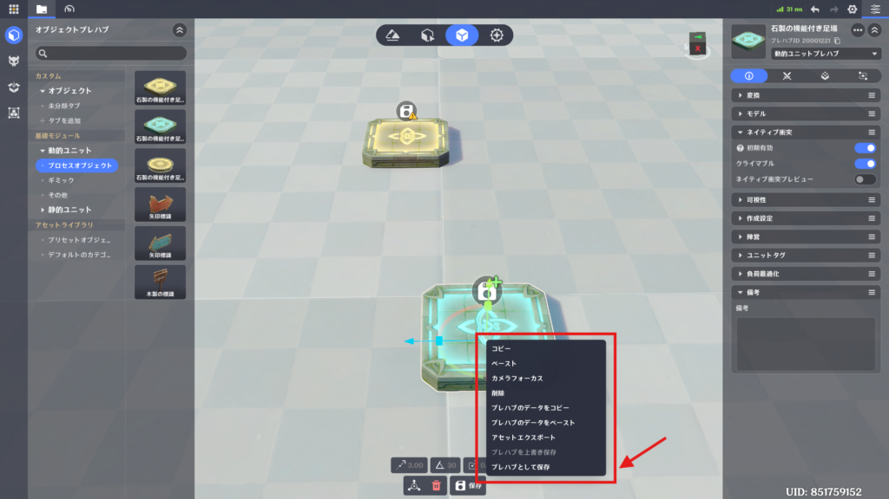
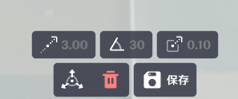
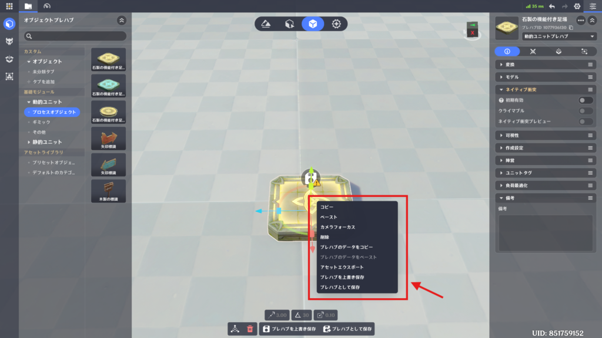
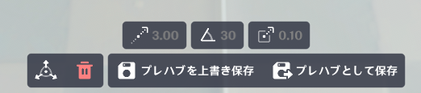
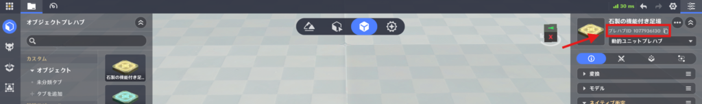
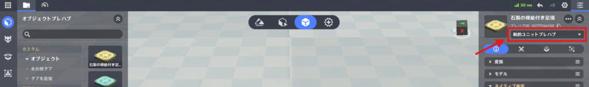

プレハブライブラリモード
⭐1.開き方

⭐2.プレハブライブラリの画面構成

プレハブライブラリのアセットバーは左側に配置されています。
⭐3.アセットバーの詳細
🌸1.カスタムプレハブ
🌸2.基礎モジュール
動的ユニットと静的ユニットが含まれます。
🌸3.アセットライブラリ
⭐4.プレハブライブラリの使い方
🌸1.プレハブの作成
(1) アセット欄 – 基礎モジュールから作成アセット欄からオブジェクトを左クリックしたままドラッグし、離すとエディタ内に配置されます。
また、アセット欄のオブジェクトを左クリックするだけで画面の中央に作成されます。
(2) コピー＆ペーストで作成
右クリックメニューから、既存のカスタムプレハブをコピーします。
その後、何もないエリアを右クリックし、ペーストを実行します。
(3) 新規作成された未保存プレハブ

未保存のプレハブは、対象のオブジェクトに緑色の＋アイコンが表示されます。
🌸2.プレハブの編集
編集したいプレハブをクリックすると、画面右側に詳細画面が開きます。詳細画面では、エンティティ編集と同じ手順で、プレハブの属性、戦闘設定、コンポーネント、ノードグラフを編集できます。

カスタムプレハブに追加は変更が行われると、オブジェクトに黄色の！アイコンが表示されます。
また、それに対応して、左側のアセット欄内にあるアイコンにも黄色の！アイコンが付きます。
🌸3.プレハブの保存


新規作成したプレハブは、下部メニューの「保存」 または 右クリックメニューの「プレハブとして保存」をクリックして、プレハブを保存します。


カスタムプレハブを保存するには、下部メニュー または 右クリックメニューから保存します。
※上書き保存を行うと、「エンティティ配置」タブ内でこのプレハブを参照しているすべてのオブジェクトに対して更新内容を反映します。
ただし、それらのオブジェクトが個別に変更していた場合、その箇所は上書きされずに保持されます。
🌸4.プレハブの使用方法

🌸5.プレハブの切り替え

詳細画面の上部で、「動的」と「静的」を切り替えることができます。